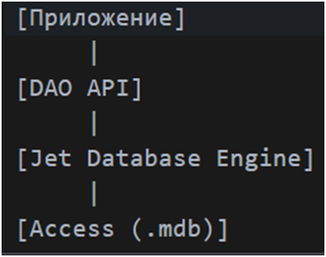

Другие API уровня доступа к данным
С развитием технологий и усложнением задач обработки данных появилась потребность в унифицированных интерфейсах между приложениями и СУБД. Помимо ODBC и JDBC, созданы специализированные API для работы с данными на уровне ОС и платформы .NET. Среди них выделяются:
- DAO (Data Access Objects) - это объектно-ориентированный API, разработанный Microsoft для работы с локальными базами данных, такими как Microsoft Access.
- ADO (ActiveX Data Objects) - – интерфейс программирования приложений для доступа к данным, разработанный Microsoft и основанный на технологии компонентов ActiveX. ADO позволяет представлять данные из различных источников в объектно-ориентированном виде.
- ADO.NET (ActiveX Data Objects .NET) - - технология, предоставляющая доступ и управление данными, хранящимся в базе данных или других источниках, основанных на платформе .NET Framework, представляет собой набор библиотек.
DAO был одной из первых попыток абстрагировать работу с БД от физического хранения данных, его архитектура представлена на рис. 8.

Рис. 8 – Архитектура DAO API.
Он работает напрямую с Jet-движком, без промежуточного слоя, что делает его простым и быстрым для локальной работы. К его особенностям относятся такие пункты, как: простота использования, поддержка только Jet-баз данных (например, Access), не подходит для клиент-серверных приложений, а также требует Windows-платформы. Практический пример взаимодействия с БД на языке Visual Basic представлен на рис. 9.
Рис. 9 – Взаимодействие с БД через DAO.
В отличие от ADO, предназначенной для тесно связанных клиент-серверных систем, ADO.NET ориентирована на автономную работу с помощью объектов DataSet. DataSet представляет локальные копии взаимосвязанных таблиц с набором строк и столбцов, позволяя изменять данные без подключения к источнику и отправлять изменения обратно через адаптер данных. Основное отличие ADO и ADO.NET заключается в том, что ADO.NET — управляемая библиотека, соответствующая правилам CLR, с использованием типов .NET (классы, интерфейсы и т.д.), доступная любому языку .NET. Технология абстрагирует разработчика от особенностей разных СУБД, предоставляя поставщиков данных, что обеспечивает универсальный подход и единые типы для работы с различными базами. Взаимодействие с данными с помощью ADO.NET представлено на рис. 10, а с помощью ADO на рис. 11.
Рис. 10 – Взаимодействие с данными с помощью ADO.NET.
В данном случае приложение – это клиентская часть программы, которая взаимодействует с базой данных через объекты поставщика данных. Поставщик данных предоставляет интерфейс для работы с различными источниками данных, а также разделяет работу на подключенный уровень (устанавливает активное соединение с базой данных, выполняет SQL-запросы или хранимые процедуры, представляет результаты запроса) и отключенный уровень (Dataset - локальные копии взаимосвязанных таблиц с набором строк и столбцов, DataTable представляет одну таблицу реляционных данных в памяти; данные являются локальными).
Рис. 11 – Взаимодействие с данными через ADO.
В случае взаимодействия с данными через ADO, приложение – это клиентская часть программы, использующая объекты ADO для взаимодействия с данными. Далее ADO преобразует вызовы приложения в команды для OLE DB (Object Linking and Embedding Database - набор COM-интерфейсов, которые позволяют приложениям унифицировано работать с данными разных источников и хранилищ информации). OLE DB устанавливает связь с конкретным источником данных (база данных, файл, электронная таблица). Источник данных выполняет запросы и возвращает результаты обратно через OLE DB -> ADO -> Приложение.
Предыдущая страница |
Следующая страница